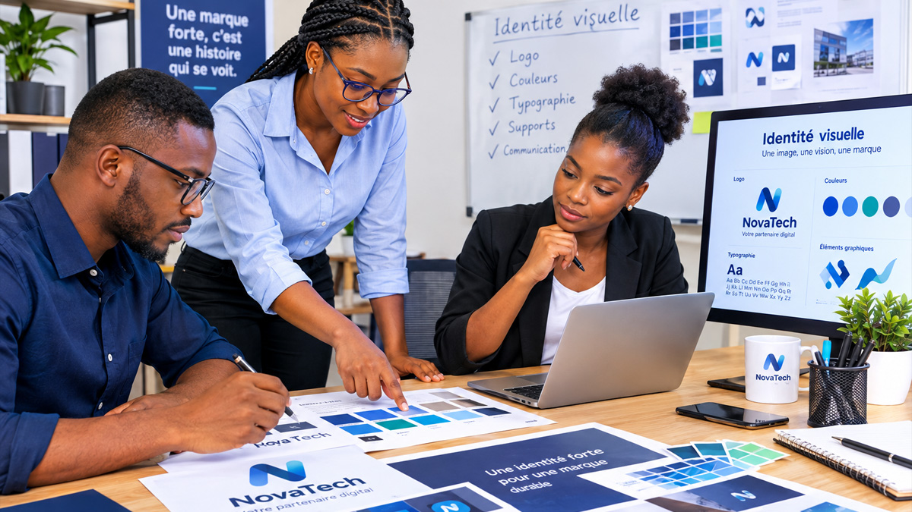

En Côte d'Ivoire comme ailleurs, les clients choisissent de plus en plus des marques dans lesquelles ils ont confiance — et cette confiance se construit d'abord par la cohérence. Une entreprise qui soigne son image inspire un sentiment de sérieux et de qualité avant même le premier échange. C'est exactement ce que le branding apporte.
1. Le positionnement d'abord : qui êtes-vous, pour qui ?
Avant le logo et les couleurs, il faut répondre à des questions simples : pour qui travaillons-nous ? Quel problème résolvons-nous ? Qu'est-ce qui nous rend différents des concurrents ? Quelles sont nos valeurs ?
Le piège classique est de vouloir plaire à tout le monde. Une marque qui essaie d'être « tout pour tous » devient invisible. Un positionnement clair — même volontairement étroit — permet à vos clients de vous identifier immédiatement et de se reconnaître dans votre message.
2. L'identité visuelle : bien plus qu'un logo
L'identité visuelle comprend le logo, mais aussi la typographie, la palette de couleurs, les formes, le style photographique et les règles d'utilisation. C'est un système cohérent, pensé pour être décliné sur tous les supports : site web, réseaux sociaux, cartes de visite, emballages, véhicules, habillage de boutique.
- Le logo : simple, lisible à petite taille, adapté au numérique comme à l'impression.
- La palette : des couleurs choisies pour les valeurs et l'émotion qu'elles transmettent, pas par goût personnel.
- La typographie : 2 ou 3 familles maximum, hiérarchisées.
- Cohérence : la même identité sur chaque support, sans improvisation.

3. Une marque se vit : cohérence dans l'expérience
Le branding ne s'arrête pas aux supports visuels. La façon dont vous répondez au téléphone, l'accueil dans votre boutique, la qualité de votre livraison, vos réseaux sociaux : tout communique. Une promesse de marque tenue crée des clients fidèles ; une promesse non tenue détruit la confiance plus vite qu'aucun logo ne pourra la reconstruire.
4. La marque, un actif de croissance
Une marque forte vous permet d'être reconnu sans explication, de justifier des prix plus justes, d'attirer de meilleurs talents, et de lancer plus facilement de nouveaux produits. À l'inverse, une image négligée oblige à convaincre à chaque nouveau contact, à chaque transaction.
C'est pourquoi le branding ne devrait pas être vu comme une dépense, mais comme un investissement : il travaille pour vous à chaque fois qu'un client vous voit, vous lit ou vous recommande.
5. Quand rebrander ?
Il n'est pas nécessaire de changer d'identité tous les deux ans. En revanche, il est temps de se questionner lorsque : votre image ne correspond plus à votre activité réelle, votre entreprise a évolué (nouveaux services, nouveau positionnement), ou votre marque se perd parmi vos concurrents. Parfois, un simple rafraîchissement suffit — parfois un vrai travail de repositionnement est nécessaire.
Votre image mérite l'investissement d'une vraie stratégie de marque ? BRAIN accompagne les entreprises ivoiriennes dans la création ou la refonte de leur identité : positionnement, logo, charte graphique, déclinaison sur tous les supports. Demandez un devis branding.